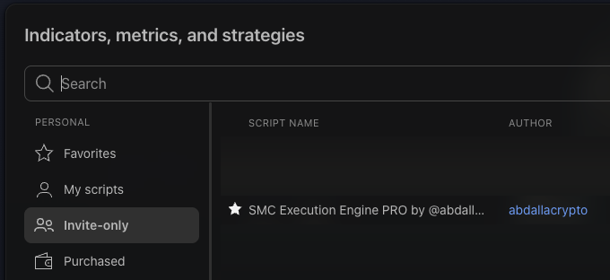
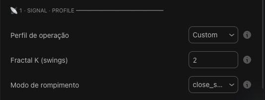
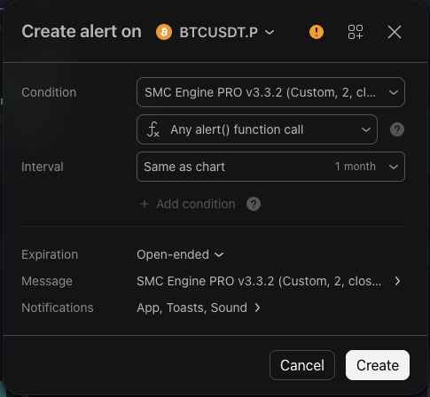
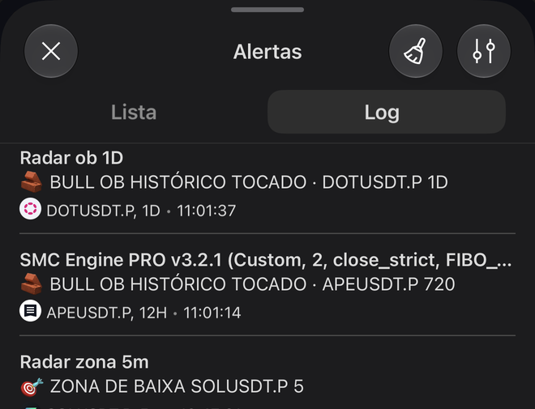
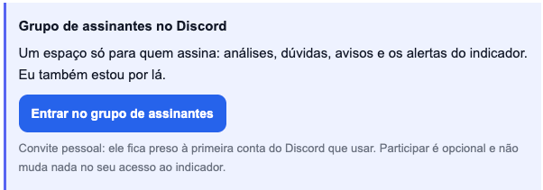

Começando em 5 Minutos
Se você acabou de adquirir o indicador e quer começar a usar imediatamente, siga estes quatro passos. Cada etapa aponta para a seção correspondente do manual, caso você queira se aprofundar depois. Se já é cliente e atualizou recentemente, veja também as Notas de Lançamento com o que mudou.
 O que mudou na v3.39 min · vídeo
O que mudou na v3.39 min · vídeo- passo

Adicione o indicador ao gráfico. No TradingView, abra o menu Indicators, localize o SMC Engine PRO na aba Invite-only scripts e clique em Add to chart. Não apareceu na lista? Feche e abra o TradingView (no navegador, recarregue a página) e procure de novo.Entender o que aparece no gráfico - passo

Escolha um perfil pré-validado. PRO Nas configurações do indicador, no grupo 📡 SIGNAL — Profile, selecione o perfil compatível com seu estilo de operação. A tabela abaixo resume cada opção.Ver a tabela de perfis - passo

Crie o alerta no TradingView. PRO Condição Any alert() function call, expiração Open-ended, e os checkboxes do grupo 🔔 ALERTAS decidem o que chega. Passo a passo por tipo de alarme em Como Configurar seus Alertas.Passo a passo dos alertas - passo

Acompanhe os alertas. PRO O indicador passa a monitorar o gráfico continuamente e notifica quando uma confluência válida é identificada. Para entender o significado de cada modo de alerta, consulte Modos de Alerta.Modos de alerta - passo

Confira seu e-mail e entre no Discord. O e-mail de confirmação traz o botão Entrar no grupo de assinantes. O grupo é só para quem assina: análises, dúvidas, avisos e os alertas do indicador. O convite é pessoal e fica preso à primeira conta do Discord que usar. Participar é opcional. Não achou a mensagem? Olhe a caixa de spam.
Tabela de perfis
| Perfil | Para quem é |
|---|---|
| Backtest BTC | Configuração do backtest de BTC publicado em engine.abdallacrypto.com/backtest, feito no gráfico de 1 hora. É o perfil mais seletivo. |
| Scalper | Pensado para gráficos de 5 a 15 minutos. Maior frequência de sinais, trades de minutos a poucas horas, filtro macro ativo. |
| Day Trade | Pensado para o gráfico de 1 hora. Equilíbrio entre frequência e qualidade dos sinais. Basta verificar o gráfico algumas vezes por dia. Trades duram de horas a um dia. |
| Swing | Pensado para o gráfico de 4 horas. Poucos sinais de alta convicção. Configura o alerta e aguarda. Trades duram de dias a semanas. Filtro macro desativado. |
| Custom | Permite ajustar manualmente cada parâmetro. Indicado para quem já conhece o funcionamento do indicador. Consulte Configurações Recomendadas para valores de referência. |
Ao selecionar qualquer perfil exceto Custom, o indicador ajusta automaticamente todos os parâmetros técnicos — Fractal K, Strictness, Break Mode, Alert Mode e filtro macro. Não é necessário alterar mais nada no grupo SIGNAL além do perfil escolhido.
Manual de InstruçõesO que é o SMC Engine PRO
O SMC Engine PRO é uma ferramenta de leitura estrutural e apoio à execução baseada em Smart Money Concepts (SMC).
Ele transforma a ação do preço em um mapa claro e consistente, usando swings, BOS e CHOCH, e projeta zonas de interesse por meio de Fibonacci automático e Order Blocks do contexto atual.
O objetivo não é gerar sinais automáticos, mas oferecer contexto, níveis e alertas de evento (versão PRO), para que o trader execute com mais disciplina e menos ruído.
O indicador opera sobre um regime persistente (UP, DOWN ou NONE) que governa toda a lógica subsequente — estrutura, zonas, order blocks e alertas. Tudo nasce da leitura estrutural.
Referência RápidaGlossário
Termos essenciais utilizados ao longo deste manual e no indicador.
| Termo | Definição |
|---|---|
| BOS | Break of Structure — rompimento que confirma a continuidade da tendência vigente. |
| CHOCH | Change of Character — rompimento que indica possível inversão de regime (UP → DOWN ou vice-versa). |
| Regime | Estado persistente do mercado (UP, DOWN ou NONE) que governa toda a lógica do indicador. |
| Anchor | Nível de guarda estrutural — último fundo válido (regime UP) ou topo válido (regime DOWN). |
| OB | Order Block — zona de preço derivada do candle do anchor, representando área de interesse institucional. |
| FVG | Fair Value Gap — gap entre candles que indica desequilíbrio de preço e eficiência institucional. |
| ATR | Average True Range — medida de volatilidade média utilizada para calibrar gates de validação. |
| Mitigação | Quando o preço retorna e "preenche" um Order Block. Vale para os OBs do histórico, que saem do gráfico quando são mitigados. |
| Fractal K | Número de candles à esquerda e direita necessários para confirmar um swing (pivô). |
| Displacement | Impulso de preço pós-rompimento; precisa exceder ATR × multiplicador para validar um OB. |
| Strictness | Nível de exigência (0–10) para validação de Order Blocks. Quanto maior, mais rigoroso. |
FundamentosConceitos Principais
 Conceitos Básicos de Smart Money Concept28 min · vídeo
Conceitos Básicos de Smart Money Concept28 min · vídeo Estrutura mais precisa: topo e fundo no lugar certo2 min · vídeo
Estrutura mais precisa: topo e fundo no lugar certo2 min · vídeoEstrutura de Swings (Fractal K)
Os swings são definidos por pivôs de alta e baixa, controlados pelo parâmetro Fractal K. Swings são identificados com base em uma sensibilidade de pivô configurável. Valores maiores produzem swings menos frequentes e mais significativos; valores menores tornam a estrutura mais reativa.
- K maior → estrutura mais limpa e conservadora (menos swings, mais significativos)
- K menor → estrutura mais sensível e reativa (mais swings, mais ruído)
A partir desses swings, o indicador detecta dois tipos de quebra estrutural: BOS e CHOCH.
Break of Structure (BOS)
O BOS ocorre quando o preço rompe o último swing na mesma direção do regime vigente, confirmando continuidade da tendência.
- BOS de alta → rompe o último swing high (regime UP)
- BOS de baixa → rompe o último swing low (regime DOWN)
A cada BOS de continuação, o anchor é atualizado para o swing mais recente, e o Fib B é recriado.
Modo de rompimento
O critério de rompimento é configurável em Modo de rompimento (padrão: close_strict):
close_strict— O fechamento do candle deve superar o nível.close_or_equal— O fechamento pode igualar ou superar o nível.wick— Basta o pavio passar do nível, mesmo que o candle feche de volta.
Change of Character (CHOCH)
O CHOCH indica uma possível inversão de regime. Ocorre em duas situações:
- O preço quebra o nível estrutural do último BOS na direção oposta
- O preço quebra o anchor (guardrail) do regime atual
O CHoCH reinicia o contexto estrutural do indicador para refletir a nova direção do mercado.
BOS = mesma direção do regime → continuação. CHOCH = direção oposta → inversão. O regime (UP/DOWN/NONE) governa toda a lógica.
Âncora (Guardrail Estrutural)
A âncora é o nível que "protege" a estrutura atual e funciona como guardrail do regime:
- Regime UP: anchor = último fundo válido (swing low)
- Regime DOWN: anchor = último topo válido (swing high)
A âncora é utilizada para:
- Marcação visual no gráfico (com transparência configurável)
- Lógica estrutural — se o preço quebra o anchor, dispara CHOCH
- Construção do Order Block e da Fibonacci do contexto
A âncora é um nível de referência estrutural que ajuda o indicador a determinar quando uma mudança de regime ocorreu e governa o posicionamento das zonas principais.
Quando a mesma vela que faz o fundo é a que vira a estrutura (o V numa vela só) ou a que rompe o topo anterior a favor (BOS), a âncora, a Fibonacci e o Order Block nascem desse fundo v3.3.0. Antes nasciam de um fundo anterior, mais alto, e o stop de referência ficava dentro do pavio que o preço acabou de varrer. É raro, mas quando acontece muda a entrada e o stop daquele sinal. Vale para compra e venda.
Zonas de InteresseFibonacci Automática
O indicador projeta duas Fibonaccis independentes, cada uma ancorada em momentos estruturais distintos. Ambas são dinâmicas e se ajustam automaticamente ao contexto.
Níveis utilizados:
- 0% e 100% (extremos do range)
- 38.2% (opcional, configurável)
- 50%
- 61.8%
- 79%
Fib A — Fibonacci do CHOCH
Criada no momento do CHOCH. Representa a Fibonacci principal do novo contexto/regime.
O range do Fib A não é fixo. O 100% fica na origem do CHOCH e o 0% acompanha o extremo do movimento: cada nova máxima (na alta) ou nova mínima (na baixa) estica a Fib e recalcula os níveis, inclusive depois de um BOS de continuação. Os níveis só ficam parados enquanto o preço não faz um extremo novo. O Fib A é refeito no próximo CHOCH.
Fib B — Fibonacci da Âncora Atual
Opcional e mais voltada à execução de curto prazo:
- Recriada a cada BOS de continuação
- Ancorada no anchor atualizado
- Mantém níveis mais "curtos" e atualizados
O Fib B nasce no primeiro BOS de continuação depois do CHOCH. Enquanto ele não existe, os alertas usam o Fib A. Se em Fibonacci exibida o Fib B não estiver selecionado, ele não é criado e os alertas ficam sempre no Fib A.
Nos ajustes de alerta, a opção Usar Fib B (âncora atual) escolhe a Fibonacci dos alertas: ligada (padrão), usa o Fib B quando ele existe; desligada, usa sempre o Fib A.
Zonas InstitucionaisOrder Blocks
O indicador desenha Order Blocks com base no anchor estrutural atual, garantindo que as zonas reflitam sempre o contexto de mercado mais relevante.
Lógica de Construção
A zona do Order Block é derivada da sequência de candles ao redor da âncora. O indicador aplica um método proprietário para identificar o candle mais relevante para o limite da zona, com uma janela de lookback configurável para lidar com variadas estruturas de mercado.
O parâmetro Velas para trás na busca da vela oposta (padrão 10) controla quão longe o indicador busca para trás ao procurar o candle relevante para a zona.
Status do Order Block: PENDING → VALID
 Order Blocks confirmam mais cedo3 min · vídeo
Order Blocks confirmam mais cedo3 min · vídeo
Por padrão, o indicador mantém apenas um Order Block ativo, atualizado dinamicamente à medida que o anchor evolui.
Quando o filtro de validação está ativo (versão PRO), todo OB nasce como PENDING (status 2) e precisa passar por duas gates dentro de uma janela de avaliação para ser confirmado:
1. Gate de Deslocamento — o movimento de preço após o OB deve demonstrar momentum suficiente em relação à volatilidade recente. O sistema mede o quanto o preço percorreu a partir da zona contra um threshold baseado em ATR.
2. Gate FVG (opcional) — quando ativado, o sistema exige evidência de um gap de eficiência institucional dentro do movimento de impulso, servindo como confirmação secundária de deslocamento genuíno.
Visualmente: OBs PENDING aparecem com bordas tracejadas (dashed) e cor mais clara. Quando validados, o tracejado some e a cor volta ao normal. Se não validarem dentro da janela, são deletados.
Se um OB expirar sem validar, ele é removido e o sistema segue em frente. Zonas duplicadas dentro do mesmo contexto estrutural são gerenciadas automaticamente.
Confirmação de Order Blocks PRO
Um Order Block não deve existir apenas porque houve um rompimento. Ele precisa provar que o rompimento foi legítimo.
Na estrutura tradicional, qualquer BOS pode gerar um OB. O problema é que nem todo rompimento representa deslocamento institucional real. Por isso a confirmação foi criada.
O que o sistema verifica
Quando ocorre um BOS ou CHOCH, o último candle oposto ao impulso é identificado como potencial OB. Mas ele não é validado imediatamente. O sistema entra em um período de observação e verifica:
- Se o deslocamento foi forte o suficiente em relação à volatilidade (Displacement Gate)
- Se houve Fair Value Gap como assinatura de eficiência institucional (FVG Gate, se ativo). Opcionalmente, o tamanho mínimo do gap pode ser configurado como fração do ATR para filtrar micro-gaps sem significância.
- Se a vela do OB teve volume forte em relação à média (opcional, desligado por padrão, em Exigir confirmação por volume)
O OB é confirmado assim que essas condições forem atendidas — a janela de validação é apenas o prazo máximo. Se o prazo terminar sem as condições, ele é descartado com invalidation lock.
A confirmação não olha apenas para o rompimento. Ela olha para o impulso que vem depois: se ele foi forte e deixou um FVG. É a diferença entre "rompeu" e "rompeu com força".
Mitigação
A mitigação ocorre quando o preço retorna e "preenche" o Order Block:
- OB de alta: mitigado quando o preço retorna e preenche a zona.
- OB de baixa: mitigado quando o preço retorna e preenche a zona.
A mitigação vale para os OBs do histórico: quando um deles é mitigado, sai do gráfico. O OB do contexto atual não some só porque o preço voltou nele: ele continua no gráfico até ser substituído por uma estrutura nova.
Quando o Order Block é grande demais
O tamanho do OB define a distância do seu stop. Um OB muito alto empurra o stop para longe e piora o risco por trade, mesmo quando a leitura de estrutura está correta.
Nesses casos, uma alternativa é descer o tempo gráfico para refinar. A mesma região, olhada num tempo gráfico menor, costuma produzir um Order Block mais estreito dentro dela, com ponto de entrada mais preciso e stop mais curto. Aí você espera o preço chegar nesse OB refinado. Se não chegar, não há entrada, e isso faz parte do método.
Existe também o limite automático de altura, em Altura máxima do OB (× ATR): OBs mais altos que esse múltiplo do ATR são descartados e nem aparecem no gráfico.
Desde a v3.3.0 isso pode ser automático v3.3.0: em SIGNAL — OB Validation, a opção Refinar OBs além da 61,8% da Fibo vigente faz o indicador olhar o tempo gráfico de baixo (no 4h usa o 1h, no 1h o 15m, no 15m o 5m, no diário o 4h) quando o Order Block do sinal fica mais alto que a 61,8 da Fibonacci, e usar o Order Block de lá, que é menor. A caixa encolhe e mostra qual tempo foi usado; entrada e stop passam a ser os da caixa menor, e o alerta diz a faixa nova. Vem desligado.
Histórico de Order Blocks
Uma configuração opcional chamada "Preservar histórico de OB não mitigado" permite exibir e preservar os últimos N Order Blocks não mitigados como contexto histórico (controlado por Máximo de OBs históricos mantidos, padrão 5).
- Zonas históricas permanecem estendidas para a direita com transparência extra
- OBs mitigados são removidos automaticamente
- Adiciona memória estrutural sem comprometer a clareza do gráfico
Versão PROAlertas PRO

O SMC Engine PRO adiciona um motor completo de alertas inteligentes, avaliados intrabar em tempo real, combinando estrutura, Fibonacci e Order Blocks.
Alertas de CHOCH (fechamento)
Disparam somente no fechamento do candle. Disponíveis para:
- CHOCH UP
- CHOCH DOWN
- CHOCH (qualquer direção)
Alertas Intrabar (OB + Fibo)
Alertas em tempo real, avaliados intrabar (sem esperar fechamento). Você pode escolher usar Fib A (CHOCH) ou Fib B (âncora atual). Quando Fib B é selecionada mas ainda não está ativa, os alertas usam Fib A automaticamente.
Modos Disponíveis
Dispara quando o preço toca o nível 0.618.
Dispara quando o preço toca o nível 0.79. Captura pullbacks mais profundos.
Dispara quando o preço entra no Order Block pelo lado correto.
Dispara quando ocorre OB_START ou FIBO_079 (qualquer uma das condições).
Dispara somente quando OB_START e FIBO_079 ocorrem no mesmo candle.
Dispara quando o preço entra no Order Block pelo lado correto e o candle de fato encosta na zona.
Dispara quando o preço toca o ponto médio do Order Block, entrando pela direção correta.
Dispara quando o candle atravessa a zona entre 0.618 e 0.79.
Dispara quando o preço entra no OB e toca pelo menos um nível de Fibonacci.
Dispara quando um nível de Fibonacci é tocado primeiro e depois o preço entra no OB.
Alertas em OBs Históricos v3.2.0
 Alarme no toque em Order Blocks históricos + filtro de RSI6 min · vídeo
Alarme no toque em Order Blocks históricos + filtro de RSI6 min · vídeo
Enquanto os modos acima respondem ao setup ativo (CHOCH + OB + Fib), este alerta dispara quando o preço toca qualquer Order Block não-mitigado visível no gráfico, mesmo sem setup formado. Útil para capturar reentradas em zonas anteriores e reversões contra a tendência macro.
- Caixa de seleção própria — não interfere nos alertas de setup. Habilita em
Toque em OB histórico, no grupo 🔔 ALERTAS — o que chega no celular. - Um alerta por OB enquanto o alerta estiver rodando, sem spam, mesmo se o preço voltar várias vezes na mesma zona. Se você apagar e recriar o alerta, a contagem recomeça: um OB que já tinha sido tocado e continua no gráfico pode avisar de novo.
- Primeiro toque intrabar — dispara assim que o preço entra na zona, sem esperar fechamento.
- Ignora o filtro macro — captura também reversões na direção contrária à tendência maior.
- Filtro de RSI opcional (v3.2.0) — em
└ só com RSI no extremo, o alarme passa a exigir o RSI do gráfico esticado a favor do lado: abaixo do limite nos OBs de compra, acima nos de venda (limites ajustáveis; padrão 30/70). O filtro segura a maior parte dos toques e deixa passar as chegadas mais esticadas. - Mensagem com contexto: posição do OB na lista visível (ex: 2º de 5), idade em candles e faixa de preço.
O total exibido na mensagem (X de N) é o número de OBs históricos atualmente visíveis na mesma direção (bull ou bear), limitado pela configuração Máximo de OBs históricos mantidos no grupo VISUAL — OB History. Padrão: 5 (máximo 20). Se você ajustar esse valor para 10, o denominador acompanha.
Quando o filtro bloqueia um alarme, o Order Block continua contando como avisado — é um toque, uma chance. Se o preço voltar à mesma zona depois, com o RSI no extremo, não haverá novo aviso: o primeiro toque já consumiu a vez daquele bloco.
Para ativar:
- Nas configurações do indicador, habilite
Toque em OB históricono grupo 🔔 ALERTAS — o que chega no celular. Opcional: ligue└ só com RSI no extremologo abaixo - Crie um alerta no TradingView usando
Any alert() function call(mesmo método dos modos acima)
Regras de Qualidade (Anti-Spam)
O motor de alertas inclui controles de qualidade integrados para evitar sinais repetidos para a mesma oportunidade. Os alertas são redefinidos quando um novo evento estrutural ocorre.
Como configurar seus alertas
Todos os avisos do PRO chegam por uma única condição do TradingView: Any alert() function call. Quem decide o que chega são os checkboxes do grupo 🔔 ALERTAS nas configurações do indicador.
Isso tem uma consequência que costuma surpreender: um único alerta carrega todos os tipos que estiverem marcados. De fábrica já vêm ligados o Sinal principal (zona de entrada) e o Alinhamento de Fluxo com os três cenários, então você recebe os dois pelo mesmo alerta. Não é duplicidade nem erro, e para receber só um tipo basta desmarcar os outros e recriar o alerta.
Mexeu nas configurações? Recrie o alerta
O alerta do TradingView guarda uma cópia das configurações do indicador no momento em que foi criado. Se depois você marcar ou desmarcar um checkbox, trocar o modo de alerta, o perfil ou qualquer outro ajuste, o alerta que já existe não muda: continua avisando com a configuração antiga. Sempre que mexer nas configurações, apague o alerta e crie de novo. O mesmo vale quando sai uma versão nova do indicador.
Dá para identificar a origem de cada mensagem pelo começo dela:
| Começa com | De onde veio |
|---|---|
🎯 ZONA DE ALTA / 🎯 ZONA DE BAIXA | Sinal principal (zona de entrada). Ligado por padrão. |
C1 · 🧭 / C2 · ⚡ / C3 · 🎯, seguido de FLUXO: AVALIE | Alinhamento de Fluxo, no cenário indicado. Ligado por padrão. |
🧱 BULL OB HISTÓRICO TOCADO / 🧱 BEAR OB HISTÓRICO TOCADO | Toque em OB histórico. Desligado por padrão. |
CHOCH_UP / CHOCH_DOWN | CHOCH do gráfico. Desligado por padrão. |
Isso significa que você cria um alerta por moeda e tempo gráfico, não um por tipo de aviso.
Os passos, iguais para todos os tipos
- Abra o gráfico no tempo gráfico onde o alarme deve trabalhar
- Adicione o SMC Engine PRO e ligue os checkboxes que você quer receber (detalhe por tipo abaixo)
- Clique no ícone de Alertas (sino) e em Criar alerta
- Em Condição, selecione SMC Engine PRO e escolha
Any alert() function call - Em Expiração, marque Open-ended alert — exige plano pago do TradingView. No gratuito funciona também, mas o alerta expira e para de funcionar em silêncio. Você precisa re-armar depois.
- Escolha a notificação (push no celular, popup, e-mail) e clique em Criar
O alerta roda nos servidores do TradingView 24 horas por dia. Você não precisa deixar o navegador e/ou o app aberto.
As condições OB & Fibo Alerts, CHOCH (UP/DOWN), CHOCH_UP e CHOCH_DOWN continuam existindo para não quebrar alertas já criados, mas não são mais recomendadas: elas entregam uma mensagem mais pobre, sem a zona e o stop de referência.
Tipo 1 — Sinal principal (zona de entrada)
Avisa quando o preço entra na zona de entrada do tempo gráfico do próprio gráfico.
Gráfico: o que você opera. Ligue: Sinal principal (zona de entrada). Ajuste também: o Modo de alerta, que define o gatilho de disparo do alerta.
Tipo 2 — Alinhamento de Fluxo
 Alinhamento de Fluxo: contexto e gatilho em dois tempos gráficos15 min · vídeo
Alinhamento de Fluxo: contexto e gatilho em dois tempos gráficos15 min · vídeo
Avisa quando a estrutura vira no tempo gráfico de execução depois de o preço ter tocado uma zona do tempo gráfico maior. São três cenários.
Gráfico: o de execução — 15m é o recomendado.
Ligue: Ativar Alinhamento de Fluxo, defina o Timeframe de contexto (precisa ser maior que o gráfico; 4h é o padrão) e marque os cenários que quiser:
- cenário 1 — OB vigente do contexto tocado
- cenário 2 — OB histórico tocado
- cenário 3 — OB histórico + o contexto reverte antes
O que vem na mensagem: a 79% da fib A e a borda do OB do seu gráfico (os dois níveis de retração; vale o que o preço tocar primeiro) e quanto o preço já andou até a estrutura virar v3.2.1. Nos cenários 1 e 2 a distância é medida desde a borda de entrada do OB do contexto; no cenário 3, desde a 61,8% do contexto. Valor positivo quer dizer que o preço já andou a favor do trade. Use para avaliar se o movimento já foi antes de posicionar a ordem.
Se aparecer ⚠ ctx TF <= chart TF! no painel, o contexto está menor ou igual ao gráfico e nenhum aviso vai sair.
Lendo o painel de Fluxo
O painel mostra em duas linhas independentes — LONG e SHORT — em que ponto está a leitura de cada lado. Uma pode estar adiantada e a outra parada. Quando um lado está desligado nos ajustes, a linha dele mostra off.
Os tempos gráficos que aparecem nos textos são sempre os seus. A primeira linha mostra a configuração em uso, no formato ctx 4h → exec 15m: o primeiro é onde o indicador procura as zonas, o segundo é o gráfico onde você opera. Se você usa contexto de 12h e executa no 5m, é ctx 12h → exec 5m que vai estar escrito — e todas as mensagens abaixo trocam de tempo gráfico junto. Os exemplos desta página usam 4h e 15m apenas para ilustrar.
Cada texto do painel é uma frase fixa. Esta é a lista completa — procure a que você está vendo:
| O que aparece | O que significa |
|---|---|
| 👀 vigiando zonas do 4h | Nenhuma zona foi tocada. Não há leitura em andamento — só observação. |
| 🧭 C1 · 🕐 OB vigente tocado — falta CHOCH no 15m | O preço chegou no Order Block atual do contexto. Falta a estrutura virar a favor no seu gráfico. |
| ⚡ C2 · 🕐 OB tocado — falta CHOCH no 15m | O preço chegou num Order Block histórico do contexto. Mesma espera: falta a virada no seu gráfico. |
| 🎯 C3 · 🕐 na retração do 4h — falta CHOCH no 15m | O contexto já reverteu e o preço já está na retração dele. Falta só a virada no seu gráfico. |
| ⏳ 4h reverteu — falta o preço na retração | A estrutura do contexto virou, mas o preço ainda não voltou para a zona. |
| ⏳ aguardando o preço buscar a 79% do 4h | Falta o preço alcançar o nível de retração do contexto para a leitura seguir. |
| ⏳ CHOCH contra — só volta se buscar a 79% do 4h | A estrutura virou contra no seu gráfico. A leitura não morreu, mas só se reabre se o preço buscar aquele nível. |
| 🔥 alinhado — falta o preço na zona | Contexto e estrutura estão a favor; falta só o preço chegar. Se o cenário está marcado nos alertas e o seu alerta estava ativo nesse momento, o alarme já saiu. É o tempo de preparar a ordem. |
| ✅ na zona — avalie entrada | O preço chegou. A etiqueta está no gráfico; passe o mouse sobre ela para ver o nível. A decisão de entrar, dimensionar e sair é sua. |
| ✔ já avisado neste contexto | A leitura se completou e não vai repetir. Um aviso novo exige um contexto novo. |
| ✖ preço rompeu o OB do 4h | O preço atravessou a zona em vez de respeitá-la. Cancelado. |
| ✖ teve continuidade sem retração | O movimento seguiu direto e nunca voltou para a zona. Cancelado. |
| ✖ CHOCH contra no 15m — tentativa encerrada | A estrutura virou contra no seu gráfico. Cancelado. |
| ✖ contexto virou | A leitura do tempo gráfico maior mudou de lado e o cenário deixou de valer. |
| ✖ contexto perdido — rompeu a âncora do 4h | O contexto perdeu o próprio nível de guarda. Cancelado. |
| ✖ zona consumida | Depois do toque, e antes de a estrutura virar no seu gráfico, o preço consumiu a zona (o OB foi mitigado). Cancelado. |
| off | Aquele lado (compra ou venda) está desligado nos ajustes. |
Na prática, uma regra resume o painel: 🕐 e ⏳ é esperar · 🔥 é preparar a ordem · ✅ é decidir · ✖ e ✔ é virar a página.
Atenção ao perfil. Os perfis não alteram nenhuma configuração do Fluxo, mas mudam o Fractal K, e o gatilho do Fluxo é o CHoCH do gráfico, que depende do K. Day Trade usa K=1 e deixa o Fluxo mais sensível. Swing usa K=3 e deixa mais seletivo. Trocar de perfil muda junto a frequência dos disparos.
Um contexto por instância. O campo Timeframe de contexto é único, então cada cópia do indicador vigia um contexto só. Para acompanhar dois contextos diferentes, adicione o indicador duas vezes no mesmo gráfico, cada cópia com o seu contexto, e crie um alerta para cada uma. Não existe forma de cobrir dois contextos com um alerta só. O que consome a cota do seu plano do TradingView é a quantidade de alertas, não de abas abertas.
O alarme e a etiqueta são dois momentos
O alarme chega no seu celular no momento do alinhamento — quando a estrutura vira a favor no tempo gráfico de execução. É o seu tempo de preparação: a mensagem já traz os níveis de interesse. A etiqueta no gráfico (C1 · na zona, C2 · na zona ou C3 · na zona) aparece depois, quando o preço efetivamente volta à zona de entrada. Vale igual para os três cenários. A etiqueta só aparece com Mostrar painel de status do Fluxo ligado (padrão).
O aviso não envelhece
Depois do alinhamento só existem dois desfechos: ou o preço volta à zona e a etiqueta aparece, ou o movimento segue sem dar a retração e o aviso é cancelado — com o motivo escrito no painel. Você nunca precisa adivinhar se um aviso de horas atrás ainda vale: o painel mostra, para cada lado (compra e venda), em que ponto a leitura está.
- 🕐 OB tocado — falta CHOCH: a zona do contexto foi visitada; aguardando a estrutura virar no seu gráfico
- 🔥 alinhado — falta o preço na zona: o alinhamento aconteceu (com o cenário marcado, o alarme já saiu); aguardando a retração até a zona de entrada
- ✅ na zona — avalie entrada: o preço chegou; a etiqueta está no gráfico e a avaliação é sua
- ⏳ aguardando…: no cenário 3, uma retração mais funda no contexto pode rearmar a leitura — o painel avisa o que ele espera
- ✖ cancelado: a leitura morreu — o painel diz por quê (o preço seguiu sem retração, rompeu o Order Block, ou a estrutura virou contra)
- ✔ já avisado neste contexto: a leitura se completou; um novo aviso exige um contexto novo
O Alinhamento de Fluxo é uma leitura de estrutura, não uma ordem pronta: ele não marca stop nem alvo. Os níveis de entrada vêm na mensagem do alarme e no detalhe da etiqueta (passe o mouse sobre ela); no cenário 3, a etiqueta traz também a invalidação do contexto. O painel mostra só em que ponto está a leitura, sem preços. A decisão de entrar, dimensionar e sair é sempre sua.
Tipo 3 — Toque em OB histórico
Avisa no primeiro toque em qualquer Order Block histórico do tempo gráfico do próprio gráfico. Um aviso por OB enquanto o alerta estiver rodando.
Gráfico: o do contexto que você quer vigiar — recomenda-se o 12h ou diário. Ligue: Toque em OB histórico.
Opcional: só com RSI no extremo filtra para avisar apenas quando o RSI estiver abaixo do limite nos OBs de alta e acima nos de baixa. Reduz bastante o volume de avisos e deixa só os toques com o RSI no extremo.
Monitorando uma lista inteira
Em vez de escolher uma moeda no passo 3, escolha uma watchlist. Um alerta passa a cobrir todas as moedas dela naquele tempo gráfico. Exige plano pago do TradingView e a quantidade de alertas em lista depende do plano do TradingView.
Se o rodapé do alerta mostrar "Not calculated for N symbols", o TradingView não está calculando algumas moedas da lista — você fica sem aviso nelas.
Versão PROHUD Multi-Timeframe PRO
Painel opcional com 7 timeframes (5m a 1M), oferecendo leitura rápida de alinhamento de contexto.
Tendência Estrutural (Dots)
Cada timeframe mostra um dot colorido baseado na âncora:
- ● Verde = fundo válido = tendência de alta
- ● Vermelho = topo válido = tendência de baixa
RSI
Exibe o RSI de cada timeframe para complementar a leitura estrutural.
Funding Rate (FR)
A última linha do HUD mostra a taxa de funding atual do contrato perpétuo, por exemplo FR 0.01%. Positiva, quem está comprado paga quem está vendido; negativa, o contrário. Em símbolos sem funding (spot ou ativos fora de cripto), aparece FR n/a.
Linha de Gates (Status em Tempo Real)
A penúltima linha do HUD, logo acima do Funding Rate, resume o estado dos filtros de validação do Order Block em formato compacto, atualizado intrabar:
S7 A✓ F✗ V— L10
- S — Strictness configurado (0 a 10, padrão 7).
- A — Deslocamento: se o impulso que saiu do OB já andou o mínimo exigido, medido em ATR.
✓atingido,✗ainda não,—desativado,·sem OB pendente. - F — Fair Value Gap. Mesma legenda de símbolos.
- V — Volume (quando o filtro está ativo). Mesma legenda.
- L — Lookahead restante em velas. Quando um OB está pendente, indica quantas velas ainda estão disponíveis para validação antes da expiração.
Permite avaliar rapidamente, sem abrir as configurações, por que um alerta não disparou. Se um OB está pendente e A✗ ou F✗ aparecem, a validação ainda não foi satisfeita.
Strictness (0–10)
Ajuste que define o nível de exigência para validar Order Blocks (padrão 7). No HUD, aparece como o S da linha de gates.
- Menor (0–3): mais permissivo — aceita movimentos menores como válidos, gera mais OBs
- Médio (4–6): equilíbrio entre sensibilidade e qualidade
- Maior (7–10): mais rigoroso — exige deslocamentos fortes e claros, menos OBs
O Strictness mapeia sua preferência para uma escala de calibração interna que ajusta a agressividade da validação. Valores mais altos resultam em thresholds mais exigentes em todos os timeframes.
Prazo de validação (L)
O L da linha de gates é uma contagem regressiva: mostra quantas velas faltam para um OB pendente expirar. O OB é validado assim que os filtros ligados (deslocamento, FVG e volume) passam; se o L chegar a zero antes disso, o OB é descartado. Sem OB pendente, aparece L·.
Deslocamento exigido (A)
O A da linha de gates mostra se o impulso que saiu do OB já andou o suficiente para validá-lo. A distância exigida é medida em ATR, ou seja, acompanha a volatilidade recente do ativo.
- Exigência maior: deslocamento precisa ser mais forte → menos estruturas fracas passam → sistema mais seletivo
- Exigência menor: movimentos menores já são aceitos → mais sinais → sistema mais sensível
Timeframes menores exigem um sinal de deslocamento proporcionalmente mais forte para confirmar uma estrutura válida. Com Usar ajustes manuais avançados desligado (padrão), o indicador calibra sozinho o prazo e o deslocamento exigido, pelo timeframe e pelo Strictness. Ligado, ele usa os valores de Velas de lookahead (manual) e Multiplicador de deslocamento em ATR (manual), e o Strictness deixa de valer para a validação (o S continua aparecendo no HUD).
Versão PROFiltros de Trade PRO
Camadas adicionais de filtragem que evitam alertas em contextos desfavoráveis.
Filtro de tendência macro
Usa EMA 200 e MA 200 de um timeframe superior para filtrar alertas contra a tendência macro. Long só dispara quando o preço do timeframe superior está acima de ambas as médias. Short só quando está abaixo de ambas. Quando o preço está entre as duas (neutro), nenhum alerta é enviado.
Timeframes Disponíveis
- 4h, 12h, 1D, 1W, 2W, 1M — utilizam um único timeframe como referência.
- 12h OR 1D — modo dual que aprova o alerta quando pelo menos um dos dois timeframes (12h ou 1D) está alinhado com a direção do sinal. Menos restritivo que 1D puro, mantendo proteção macro.
O modo dual é o padrão do indicador (em Timeframe macro) e foi escolhido por reduzir o número de trades bloqueados em transições de regime sem sacrificar a qualidade do filtro.
Distância Mínima do Stop
Suprime alertas quando a distância entre entry e stop loss é menor que um percentual mínimo do preço de entrada (padrão: 0.25%). Evita trades com stop loss extremamente apertado que teriam alta chance de ser atingidos por ruído. O stop considerado é a borda oposta do Order Block ativo, o mesmo Stop ref da mensagem do alerta. Por isso, com este filtro ligado, o sinal principal só sai quando existe um OB ativo, em qualquer modo de alerta.
Versão PRORSI Price Levels PRO
Projeta no gráfico o preço exato onde o RSI atingiria overbought ou oversold, como linhas pontilhadas. Ligado por padrão.
Como funciona
O indicador calcula, com base no estado atual do RSI, qual seria o preço necessário para que o RSI toque 70 (overbought, label SC) ou 30 (oversold, label SV). Esse preço é desenhado como uma linha pontilhada à direita do gráfico.
Confluência com OB e Fib
Quando a linha SC (overbought) coincide com uma zona de Fib ou Order Block bearish, a confluência é forte para short. Quando a linha SV (oversold) coincide com uma zona bullish, a confluência favorece long.
A opção "Mostrar níveis do TF menor" vem ligada e mostra também os níveis de RSI de um timeframe menor (ex: no 15m, mostra onde o RSI do 1m atingiria OB/OS). Isso adiciona uma camada de timing mais precisa. Desligue se quiser só os níveis do timeframe do gráfico.
Ferramentas VisuaisMédias Móveis Exponenciais (EMAs)
O indicador oferece três EMAs opcionais no gráfico, úteis como referência visual de momentum e tendência. Todas vêm ativadas por padrão e não afetam a lógica de sinais.
- EMA 12 (verde) — momentum de curto prazo.
- EMA 26 (azul) — tendência de médio prazo.
- EMA 200 (vermelha) — tendência de longo prazo.
As cores e a espessura das linhas são configuráveis no grupo 🎨 VISUAL — EMAs. Ligue ou desligue cada EMA individualmente conforme sua preferência de leitura.
As EMAs são puramente visuais. O filtro macro interno utiliza EMA 200 e MA 200 do timeframe superior (ver Filtros de Trade) — independente destas EMAs no gráfico.
Ferramentas VisuaisLiquidez ($$$) e níveis anteriores v3.3.0
Antes de um sinal, muitas vezes o preço deixa topos ou fundos na mesma altura. É ali que ficam os stops de muita gente. O indicador procura esses pontos nas velas antes da âncora e desenha uma linha reta no nível deles, com a marca $$$.
- $$$ = o preço ainda não passou por ali. Tem stop parado do lado do seu stop. Vale saber antes de entrar.
- $$$ ✓ = o preço já passou por ali e limpou. A marca muda sozinha quando isso acontece.
É só um aviso visual: não liga nem desliga alerta nenhum. Vem ligado com a sensibilidade Rigoroso (pelo menos três topos ou fundos quase na mesma linha, nas velas recentes). Em VISUAL — Anchor você afrouxa para Padrão ou Amplo, muda a cor ou desliga.
Liquidez contra, no alerta
Toda mensagem de alerta (zona de entrada, OB histórico e Fluxo) termina com a linha Liquidez contra: o preço da marca $$$ que está do lado do seu stop, a distância em % e há quantas velas ela se formou. Se não há nada do seu lado, a linha não aparece. Leia antes de clicar.
Máxima e mínima do dia, da semana e do mês anterior
Linhas pontilhadas nesses níveis, com o nome à direita. No 1h você vê os três; no gráfico diário só semana e mês. São referências clássicas de reação do preço e ajudam a ler onde um OB ou uma Fibonacci coincide com um nível que todo mundo olha. Vem desligado. Liga em VISUAL — CHOCH/BOS Lines.
ReferênciaConfigurações Recomendadas

Configurações otimizadas por perfil de trader, validadas com backtest em BTCUSDT (2 a 6 anos de dados, forward test aprovado).
Metodologia
Para cada timeframe (15m, 1h, 4h e 1D), testamos mais de 180 combinações de parâmetros (K, Strictness, Break Mode, Alert Mode e Macro Filter) usando dados históricos de BTCUSDT Perpetual na Bybit com comissão real inclusa.
Os dados foram divididos ao meio: a primeira metade para otimização (treino) e a segunda metade para validação (forward test). Apenas configurações que mantiveram Profit Factor acima de 1.5 em dados nunca vistos foram aprovadas.
O timeframe de 5 minutos foi testado e reprovado no forward test (PF 0.93), demonstrando que o processo é rigoroso e não promove configurações que não funcionam.
Configuração utilizada no backtest de BTC publicado (BTCUSDT Perpetual, gráfico de 1 hora). Macro dual (12h OR 1D), Strictness alto e exigência de FVG no impulso.
| Parâmetro | Valor |
|---|---|
| Fractal K | 1 |
| Modo de rompimento | close_strict |
| Strictness | 9 |
| Modo de alerta | FIBO_618 |
| Macro filter | ON (12h OR 1D) |
| OB validity filter | ON |
| Require FVG | ON |
| Min stop | 0.25% |
Recomendado para quem quer acompanhar no gráfico a mesma configuração do backtest publicado em engine.abdallacrypto.com/backtest. O perfil cobre a entrada; a gestão usada no backtest (stop no zero em 2,5R e alvo único em 6R) é feita por você.
Pensado para gráficos de 5 a 15 minutos, entra e sai no mesmo dia. Macro filter ativo para operar só a favor da tendência diária.
| Parâmetro | Valor |
|---|---|
| Fractal K | 2 |
| Modo de rompimento | close_strict |
| Strictness | 2 |
| Modo de alerta | FIBO_618_079_ZONE |
| Macro filter | ON |
| Min stop | 0.25% |
Forward test: PF 2.93 em dados não vistos. Melhor que o período de treino.
Opera no gráfico de 1 hora. Segura posição por horas a dias. Macro filter ativo.
| Parâmetro | Valor |
|---|---|
| Fractal K | 1 |
| Modo de rompimento | close_strict |
| Strictness | 5 |
| Modo de alerta | FIBO_618_079_ZONE |
| Macro filter | ON |
| Min stop | 0.25% |
Forward test: PF 2.29 em dados não vistos (+51% vs treino).
Opera no gráfico de 4 horas. Trades duram dias a semanas. Sem macro filter (a própria estrutura 4h já filtra).
| Parâmetro | Valor |
|---|---|
| Fractal K | 3 |
| Modo de rompimento | close_strict |
| Strictness | 5 |
| Modo de alerta | FIBO_618_079_ZONE |
| Macro filter | OFF |
| Min stop | 0.25% |
Forward test: PF 3.99 em dados não vistos. Melhor resultado entre todos os timeframes.
Estas recomendações foram validadas com backtest em BTCUSDT Perpetual (Bybit). Outros ativos podem exigir ajustes. Com Usar ajustes manuais avançados desligado (padrão), o prazo e o deslocamento exigidos para validar o OB são calibrados automaticamente, pelo timeframe e pelo Strictness. Ligado, você define esses dois valores à mão. Recomendamos deixar desligado.
ReferênciaTodas as Configurações
Esta é a lista de todos os campos da tela de configurações do indicador, na mesma ordem e com os mesmos nomes. Use a busca do manual com o nome do campo para chegar aqui. Onde houver uma seção que explica o assunto, o link está na última coluna.
📡 1 · SIGNAL · Profile
| Campo | O que faz | |
|---|---|---|
| Perfil de operação padrão: Custom | Escolhe um ponto de partida por estilo: Backtest BTC, Scalper, Day Trade, Swing ou Custom. Fora do Custom, o perfil define sozinho os campos principais do sinal. Não muda o tempo do gráfico. | ver |
| Fractal K (swings) padrão: 2 | Quantas velas de cada lado confirmam um topo ou fundo. Maior: estrutura mais limpa e menos sinais. Menor: mais sensível. O perfil sobrescreve. | ver |
| Modo de rompimento padrão: close_strict | Como o rompimento de estrutura é contado: fechamento além do nível (close_strict), fechamento igual ou além (close_or_equal) ou só o pavio (wick). O perfil sobrescreve. | ver |
🔔 2 · ALERTAS NO CELULAR
| Campo | O que faz | |
|---|---|---|
| Sinal principal (zona de entrada) padrão: ligado | Liga o aviso do sinal principal: o preço chegou na zona de entrada definida pelo Modo de alerta. Todos os avisos deste grupo chegam por um único alerta do TradingView criado com "Any alert() function call". | ver |
| CHOCH do gráfico padrão: desligado | Avisa quando a estrutura do gráfico muda de direção (CHOCH). | ver |
| Toque em OB histórico padrão: desligado | Avisa no primeiro toque do preço em um Order Block histórico ainda não mitigado que está no gráfico. | ver |
| └ só com RSI no extremo padrão: desligado | Filtro do aviso acima: só avisa se o RSI do gráfico estiver no extremo a favor (baixo na compra, alto na venda). | ver |
| └ RSI máximo na compra padrão: 30 | Limite do filtro de RSI para toques em OB de alta. | ver |
| └ RSI mínimo na venda padrão: 70 | Limite do filtro de RSI para toques em OB de baixa. | ver |
| Ativar Alinhamento de Fluxo padrão: ligado | Liga o Alinhamento de Fluxo: o contexto vem de um tempo gráfico maior e o gatilho é a virada de estrutura no tempo do gráfico. | ver |
| Timeframe de contexto padrão: 4h | Tempo gráfico maior usado como contexto do Fluxo. Precisa ser maior que o do gráfico. | ver |
| Fluxo — cenário 1: OB VIGENTE + alinhamento padrão: ligado | Cenário que parte do Order Block vigente do contexto. | ver |
| Fluxo — cenário 2: OB histórico + alinhamento DIRETO padrão: ligado | Cenário que parte do toque em um Order Block histórico do contexto, sem esperar o contexto reverter. | ver |
| Fluxo — cenário 3: OB histórico + contexto REVERTE + alinhamento padrão: ligado | Como o cenário 2, mas o contexto precisa reverter e o preço buscar a zona de 61,8% a 79% antes do gatilho. | ver |
| Fluxo: quando alertar padrão: CHOCH | Em que momento o Fluxo avisa: na virada de estrutura (CHOCH), quando o preço chega no nível de entrada (Zona de entrada, uma vez por tentativa) ou nos dois (Ambos). | ver |
📡 3 · SIGNAL · Alert Mode
| Campo | O que faz | |
|---|---|---|
| Usar Fib B (âncora atual) padrão: ligado | Qual Fibonacci o alerta usa. Ligado: a Fib B quando ela existe, senão a Fib A. Desligado: sempre a Fib A. | ver |
| Modo de alerta padrão: FIBO_618_079_ZONE | Qual toque dispara o sinal principal: níveis da Fibonacci, bordas do Order Block ou combinações dos dois. O perfil sobrescreve. | ver |
| Permitir alerta com OB pendente padrão: desligado | Deixa o sinal principal disparar mesmo com o Order Block ainda pendente (não validado). | ver |
📡 4 · SIGNAL · OB Validation
| Campo | O que faz | |
|---|---|---|
| Ativar filtro de validade do OB (deslocamento + FVG) padrão: ligado | Com o filtro ligado, o Order Block nasce pendente e só é validado se o movimento que sai dele for forte o bastante. | ver |
| Strictness (0–10) padrão: 7 | Rigor da validação do Order Block. 0 é o mais rápido e menos exigente, 10 o mais lento e mais exigente. O perfil sobrescreve. | ver |
| Exigir FVG no impulso padrão: ligado | O Order Block só é validado se o movimento de saída deixar um Fair Value Gap. | ver |
| Tamanho mínimo do FVG (× ATR) padrão: 0 | Tamanho mínimo do Fair Value Gap para contar, em múltiplos do ATR. 0 aceita qualquer gap. | ver |
| Velas para trás na busca da vela oposta padrão: 10 | Até quantas velas para trás o indicador procura a vela que forma o Order Block. | ver |
| Altura máxima do OB (× ATR) padrão: 4 | Descarta Order Blocks mais altos que este múltiplo do ATR. 0 desliga o limite. | ver |
| Refinar OBs além da 61,8% da Fibo vigente padrão: desligado | Quando o Order Block é largo (passa da 61,8%), troca ele pelo Order Block do tempo gráfico abaixo, se houver um do mesmo lado dentro dele. Entrada e stop passam a ser os dele. | ver |
| Usar ajustes manuais avançados padrão: desligado | Troca o ajuste automático do Strictness pelos dois valores manuais abaixo. | ver |
| Velas de lookahead (manual) padrão: 6 | Avançado: quantas velas esperar antes de validar ou descartar um Order Block pendente. | ver |
| Multiplicador de deslocamento em ATR (manual) padrão: 2 | Avançado: tamanho do movimento, em múltiplos do ATR, exigido para validar o Order Block. | ver |
| Exigir confirmação por volume padrão: desligado | A vela do Order Block precisa ter volume acima do limite abaixo. Desliga sozinho em ativos sem dado de volume. | ver |
| Limite de volume (× SMA 20) padrão: 1.5 | Quanto o volume da vela precisa superar a média de 20 períodos. 1.5 é 50% acima da média. | ver |
| Espessura do tracejado (pendente) padrão: 1 | Aparência: espessura do contorno tracejado do Order Block pendente. | ver |
| Transparência do tracejado (pendente) padrão: 25 | Aparência: transparência do contorno tracejado do Order Block pendente. | ver |
📡 5 · SIGNAL · Trade Filters
| Campo | O que faz | |
|---|---|---|
| Ativar filtro de tendência macro padrão: ligado | O sinal principal só dispara a favor da tendência do tempo gráfico maior. O perfil sobrescreve. | ver |
| Timeframe macro padrão: 12h OR 1D | Tempo gráfico usado no filtro macro. "12h OR 1D" passa se o 12h ou o 1D estiver a favor. | ver |
| Distância mínima do stop (%) padrão: 0.25 | Não avisa quando o stop fica mais perto da entrada do que esta porcentagem. 0 desliga. | ver |
🎨 6 · VISUAL · Theme
| Campo | O que faz | |
|---|---|---|
| Tema padrão: dark | Paleta de cores do indicador: dark para gráfico escuro, light para gráfico branco. |
🎨 7 · VISUAL · EMAs
| Campo | O que faz | |
|---|---|---|
| Mostrar EMA 12 padrão: ligado | Mostra a média de curto prazo. | ver |
| Mostrar EMA 26 padrão: ligado | Mostra a média de médio prazo. | ver |
| Mostrar EMA 200 padrão: ligado | Mostra a média de longo prazo. | ver |
| Espessura da linha padrão: 1 | Aparência: espessura das médias. O mesmo nome aparece no grupo CHOCH/BOS Lines, lá para a linha de rompimento. | ver |
| Cor da EMA 12, Cor da EMA 26, Cor da EMA 200 | Aparência: cor de cada média. | ver |
🎨 8 · VISUAL · Anchor
| Campo | O que faz | |
|---|---|---|
| Mostrar âncora atual (topo/fundo válido) padrão: ligado | Marca no gráfico o topo ou fundo que sustenta a estrutura atual. | ver |
| Transparência (0 opaco, 100 invisível) padrão: 80 | Aparência: transparência do marcador da âncora. | ver |
| Tamanho do marcador padrão: tiny | Aparência: tamanho do marcador da âncora. | ver |
| Liquidez atrás da âncora ($$$) padrão: ligado | Liga os topos ou fundos iguais antes da âncora com uma linha e o rótulo $$$, e marca $$$ ✓ quando o preço varre esse nível. | ver |
| Sensibilidade padrão: Rigoroso | Quão exigente é a busca por topos e fundos iguais: Rigoroso, Padrão ou Amplo. | ver |
| Transparência padrão: 0 | Aparência: transparência da linha de liquidez. | ver |
| Cor | Aparência: cor da linha de liquidez. | ver |
🎨 9 · VISUAL · CHOCH/BOS Lines
| Campo | O que faz | |
|---|---|---|
| Espessura da linha padrão: 2 | Aparência: espessura da linha do último rompimento. | ver |
| Transparência da linha (0 opaco, 100 invisível) padrão: 60 | Aparência: transparência da linha de rompimento. | ver |
| Mostrar rótulo CHOCH/BOS padrão: ligado | Mostra o texto CHOCH ou BOS no meio da linha. | ver |
| Mostrar último CHOCH padrão: ligado | Mantém no gráfico a linha do CHOCH mais recente. | ver |
| Mostrar último BOS padrão: ligado | Mantém no gráfico a linha do BOS mais recente. | ver |
| Máximas e mínimas anteriores (dia, semana, mês) padrão: desligado | Desenha uma linha pontilhada na máxima e na mínima do dia, da semana e do mês anteriores. Cada período só aparece em tempos gráficos menores que ele. | |
| · dia anterior (1D) padrão: ligado | Inclui a máxima e a mínima do dia anterior. | |
| semana (1W) padrão: ligado | Inclui a máxima e a mínima da semana anterior. | |
| mês (1M) padrão: ligado | Inclui a máxima e a mínima do mês anterior. | |
| · estender até a direita do preço padrão: ligado | Ligado: a linha vai até depois da última vela, com o nome na ponta. Desligado: linha curta, de comprimento fixo. | |
| · comprimento da linha curta (velas) padrão: 24 | Comprimento da linha curta, em velas. Só vale com "estender" desligado. | |
| Velas para trás do rótulo padrão: 200 | Aparência: limita o recuo do texto CHOCH/BOS para ele continuar visível na tela. | ver |
| Cor das linhas de máx/mín | Aparência: cor das linhas de máximas e mínimas anteriores. |
🎨 10 · VISUAL · Fibonacci
| Campo | O que faz | |
|---|---|---|
| Fibonacci exibida padrão: both | Qual Fibonacci aparece no gráfico: Fib A (origem do CHOCH), Fib B (âncora atual), as duas (both) ou nenhuma (none). | ver |
| Fib A — transparência (0 opaco, 100 invisível) padrão: 75 | Aparência: transparência dos níveis da Fib A. | ver |
| Fib A — espessura da linha padrão: 2 | Aparência: espessura das linhas da Fib A. | ver |
| Fib A — tamanho da fonte do rótulo padrão: tiny | Aparência: tamanho do texto de porcentagem da Fib A. | ver |
| Fib A — mostrar % à direita padrão: ligado | Mostra a porcentagem de cada nível da Fib A. | ver |
| Fib A — incluir 38,2% padrão: desligado | Acrescenta o nível de 38,2% à Fib A. | ver |
| Fib B — transparência (0 opaco, 100 invisível) padrão: 75 | Aparência: transparência dos níveis da Fib B. | ver |
| Fib B — espessura da linha padrão: 2 | Aparência: espessura das linhas da Fib B. | ver |
| Fib B — tamanho da fonte do rótulo padrão: tiny | Aparência: tamanho do texto de porcentagem da Fib B. | ver |
| Fib B — mostrar % à direita padrão: ligado | Mostra a porcentagem de cada nível da Fib B. | ver |
| Fib B — incluir 38,2% padrão: desligado | Acrescenta o nível de 38,2% à Fib B. | ver |
| Posição do % (horizontal) padrão: Direita | Aparência: onde fica o texto dos níveis: Esquerda (na âncora), Meio ou Direita (junto da última vela). | ver |
| Posição do % (vertical) padrão: Sobre a linha | Aparência: texto acima da linha, sobre ela ou abaixo. | ver |
🎨 11 · VISUAL · Order Blocks
| Campo | O que faz | |
|---|---|---|
| Mostrar OB de alta (âncora L) padrão: ligado | Mostra os Order Blocks de alta (compra). | ver |
| Mostrar OB de baixa (âncora H) padrão: ligado | Mostra os Order Blocks de baixa (venda). | ver |
| Transparência do OB (0 opaco, 100 invisível) padrão: 80 | Aparência: transparência dos Order Blocks. | ver |
| Cor do OB de alta, Cor do OB de baixa | Aparência: cor dos Order Blocks. | ver |
🎨 12 · VISUAL · OB History
| Campo | O que faz | |
|---|---|---|
| Preservar histórico de OB não mitigado (visual) padrão: ligado | Mantém no gráfico os Order Blocks antigos que o preço ainda não mitigou. | ver |
| Máximo de OBs históricos mantidos padrão: 5 | Quantos Order Blocks históricos ficam no gráfico. | ver |
| Transparência extra dos OBs históricos padrão: 10 | Aparência: deixa os históricos mais apagados que o vigente. | ver |
| Modo de mitigação padrão: wick_touch | O que conta como Order Block mitigado: pavio na borda (wick_touch), fechamento dentro da faixa (body_into_zone), fechamento além do meio (body_through_mid) ou fechamento além da faixa (body_beyond_zone). | ver |
🎨 13 · VISUAL · Fair Value Gaps
| Campo | O que faz | |
|---|---|---|
| Mostrar zonas de FVG no gráfico padrão: desligado | Desenha como caixas os Fair Value Gaps encontrados na validação do Order Block. | ver |
| Máximo de caixas de FVG no gráfico padrão: 5 | Quantas caixas de FVG ficam visíveis ao mesmo tempo. | ver |
📊 14 · TOOLS · RSI Levels
| Campo | O que faz | |
|---|---|---|
| Mostrar níveis de sobrecompra/sobrevenda do RSI padrão: ligado | Marca no gráfico o preço em que o RSI chegaria à sobrecompra (SC) ou à sobrevenda (SV). | ver |
| Mostrar níveis do TF atual padrão: ligado | Mostra os níveis do tempo gráfico em que você está. | ver |
| Mostrar níveis do TF menor padrão: ligado | Mostra também os níveis de um tempo gráfico abaixo. | ver |
| Período do RSI padrão: 14 | Período do RSI usado nos níveis. O mesmo nome aparece no grupo HUD MTF, lá para o RSI do painel. | ver |
| RSI sobrecomprado padrão: 70 | Valor de RSI tratado como sobrecompra. | ver |
| RSI sobrevendido padrão: 30 | Valor de RSI tratado como sobrevenda. | ver |
| Comprimento da linha (velas) padrão: 10 | Aparência: comprimento das linhas de nível. | ver |
| Deslocamento (velas) padrão: 6 | Aparência: distância das linhas até a última vela. | ver |
| Mostrar rótulos (SC/SV) padrão: ligado | Mostra o texto SC e SV com o tempo gráfico ao lado de cada linha. | ver |
| Transparência da linha padrão: 70 | Aparência: transparência das linhas de nível. | ver |
| Transparência do rótulo padrão: 10 | Aparência: transparência do texto SC/SV. | ver |
| Tamanho do rótulo padrão: small | Aparência: tamanho do texto SC/SV. | ver |
| Cor de sobrecompra (SC), Cor de sobrevenda (SV) | Aparência: cor das linhas e dos textos. | ver |
🎯 15 · FLUXO · Ajustes finos
| Campo | O que faz | |
|---|---|---|
| Exigir sweep no toque padrão: ligado | O Fluxo só considera o toque na zona do contexto se o preço varrer o último fundo (ou topo) antes de entrar nela. | ver |
| Invalidação padrão: ob_edge | O que cancela a tentativa do Fluxo: fechamento além da borda externa do Order Block (ob_edge, mais tolerante) ou além do extremo da varredura (sweep_low). | ver |
| Lado padrão: both | Lado em que o Fluxo trabalha: compra e venda (both), só compra (long) ou só venda (short). | ver |
🖥️ 16 · HUD MTF
| Campo | O que faz | |
|---|---|---|
| Mostrar painel HUD (5m…1M) + RSI padrão: ligado | Mostra o painel com a tendência e o RSI de cada tempo gráfico, do 5 minutos ao mensal. | ver |
| Canto padrão: bottom_right | Aparência: canto da tela onde o painel fica. | ver |
| Tamanho do texto padrão: small | Aparência: tamanho do texto do painel. | ver |
| Transparência do painel (0–100) padrão: 0 | Aparência: transparência do fundo do painel. | ver |
| Período do RSI padrão: 14 | Período do RSI mostrado no painel. | ver |
🎨 17 · VISUAL · Alinhamento de Fluxo
| Campo | O que faz | |
|---|---|---|
| Mostrar painel de status do Fluxo padrão: ligado | Mostra o painel que diz em que etapa cada lado do Fluxo está. | ver |
| Desenhar zona OTE do contexto padrão: ligado | Desenha no gráfico a zona de entrada vinda do tempo gráfico de contexto. | ver |
| Canto do painel padrão: top_right | Aparência: canto da tela onde o painel do Fluxo fica. | ver |
| Deslocamento do painel (linhas) padrão: 3 | Aparência: empurra o painel para baixo para não cobrir a legenda do TradingView. | ver |
WorkflowComo Usar na Prática

Fluxo recomendado de uso do SMC Engine PRO:
- Identifique o CHOCH e o novo regime no timeframe operacional
- Observe o alinhamento no HUD — verifique se timeframes superiores confirmam a direção (PRO)
- Aguarde a retração até as zonas de Fibonacci 0.618–0.79 e/ou o Order Block
- Verifique a validação do OB — se está PENDING (borda tracejada), aguarde a confirmação (PRO)
- Use alertas intrabar para timing — escolha o modo de confluência adequado ao seu estilo (PRO)
- Execute com gestão de risco própria — o indicador fornece contexto, a decisão é do trader
Comece com o modo de alerta padrão, FIBO_618_079_ZONE. Os outros modos mudam quando o alerta chega: teste-os depois de dominar a leitura.
SuporteFAQ / Troubleshooting
Preciso de um plano pago do TradingView para usar o SMC Engine PRO?
Resposta curta: não. O PRO funciona em qualquer plano, inclusive o gratuito. Mas o grande diferencial dele é o módulo de alarmes — e é o plano do TradingView que define quantos alarmes podem ficar ligados ao mesmo tempo. O plano não muda o que o indicador faz; muda o quanto ele consegue vigiar por você.
O que é "um alarme", na prática
Um alarme não é um aviso único. É um alerta permanente de vigilância que fica ligado.
Exemplo: um alarme criado no BTC no 4h. A partir dali, toda vez que o preço voltar a uma região de Order Block com confluência de Fibonacci nesse tempo gráfico, o aviso chega no celular. Pode disparar três vezes numa semana e nenhuma no mês seguinte: continua sendo um alarme só, trabalhando o tempo todo.
Ou seja: não se cria um alarme por oportunidade. Cria-se um por coisa que se quer vigiar.
Como fazer a conta
Um alarme por moeda, por tempo gráfico:
- Bitcoin no 4h (compra ou venda)? 1 alarme
- Bitcoin no 4h e no semanal? 2 alarmes
- Cinco moedas em dois tempos gráficos? 10 alarmes
O que muda no plano pago
- Alarmes que não expiram. Nos planos limitados, a vigilância tem prazo de validade — e ela morre em silêncio. O trader segue achando que está monitorando o BTC no 4h, e não está mais. No pago, dependendo do plano, configurou uma vez e não expira mais.
- Alarme em lista. É o que muda o jogo: um único alarme cobre uma watchlist inteira. Escolhe-se o tempo gráfico — 5m, 1h, 4h, 12h, diário, qualquer um — e uma lista com centenas de moedas passa a ser vigiada de uma vez só. Quer dois tempos gráficos na mesma lista? Dois alarmes. É oportunidade chegando o dia inteiro.
- Limite de indicadores por gráfico. Esse quase ninguém avisa: o plano gratuito limita quantos indicadores cabem no mesmo gráfico. Quem usa o Engine PRO junto com RSI, volume ou outra ferramenta costuma esbarrar nesse teto antes do limite de alarmes.
Qual plano escolher
Um detalhe que pega muita gente: o alarme de lista guarda a configuração que estava no indicador no momento em que você criou o alarme. Mudar os ajustes depois não altera alarmes já criados, e a mesma configuração vale para todos os símbolos da lista. Para rodar estratégias diferentes, são listas e alarmes diferentes.
Moedas operadas × tempos gráficos usados = número de alarmes necessário. Basta comparar com o limite de cada plano e escolher o menor que atende.
Para quem está começando com poucas moedas, o plano de entrada resolve. A hora de subir é quando a escolha do que monitorar passa a ser por falta de alarme, e não por estratégia — aí o plano virou gargalo.
Custo ou oportunidade?
Muita gente vê o plano premium como custo. Na prática, é oportunidade: alarme tocando o dia inteiro com contexto bom. Ninguém entra em tudo — cada aviso merece avaliação. Mas todo dia aparece coisa que jamais seria vista olhando gráfico a gráfico na mão.
Qual a diferença entre os perfis disponíveis?
Cada perfil ajusta automaticamente a sensibilidade do indicador para um estilo de operação diferente:
- Backtest BTC — Use no gráfico de 1 hora. É a configuração do backtest de BTC publicado (BTCUSDT Perpetual, 1h). Strictness alto (9), exigência de FVG no impulso e filtro macro dual (12h OR 1D). Recomendado para quem quer acompanhar a mesma configuração do histórico divulgado.
- Scalper — Use em gráficos de 5 a 15 minutos. Mais sinais, mais oportunidades. Ideal para quem acompanha o gráfico ativamente. Trades duram de minutos a poucas horas. Opera apenas a favor da tendência macro (filtro ativo).
- Day Trade — Use no gráfico de 1 hora. Equilíbrio entre frequência e qualidade dos sinais. Não precisa ficar grudado no gráfico — basta checar a cada hora. Trades duram de horas a 1 dia. Opera apenas a favor da tendência macro (filtro ativo).
- Swing — Use no gráfico de 4 horas. Poucos sinais, mas com alta convicção. Ideal para quem prefere configurar o alerta e esperar. Trades duram de dias a semanas. Opera em ambas as direções (filtro macro desativado, pois os movimentos já são grandes o suficiente).
O padrão de instalação é o Custom. Ao adicionar o indicador pela primeira vez, os valores são os de fábrica (K 2, Strictness 7, modo de alerta FIBO_618_079_ZONE), que não são os do perfil Backtest BTC. Para usar a configuração do backtest publicado, selecione o perfil Backtest BTC no gráfico de 1 hora. O perfil não muda o tempo do gráfico.
O resultado publicado não é transferível. Os números do backtest são de BTCUSDT Perpetual no gráfico de 1 hora. Usar a mesma configuração em outro ativo ou em outro tempo gráfico é legítimo e pode funcionar bem, mas não herda aquele histórico, porque cada mercado tem volatilidade, liquidez e comportamento de estrutura próprios.
O backtest não usa o Alinhamento de Fluxo. Ele roda apenas o sinal principal. Se a sua intenção é reproduzir o perfil, desligue Ativar Alinhamento de Fluxo enquanto testa, senão você recebe os dois tipos de aviso pelo mesmo alerta e fica difícil saber o que é o quê.
Dica: Selecione o perfil no dropdown e o indicador ajusta tudo automaticamente. Você não precisa alterar nenhum outro parâmetro. Se quiser personalizar, escolha "Custom".
Como configurar o alerta corretamente?
Selecionar um perfil e adicionar o indicador não é suficiente — o alerta precisa ser criado à mão no TradingView. Em resumo: condição Any alert() function call, expiração Open-ended alert, e os checkboxes do grupo 🔔 ALERTAS decidem o que chega no seu celular. O passo a passo completo, com as particularidades de cada tipo de alarme, está em Como Configurar seus Alertas.
Qual RxR usar? Como o backtest sai da posição?
O indicador não define alvo: ele entrega a leitura de estrutura, e a mensagem do sinal principal traz só um stop de referência (Stop ref, a borda oposta do Order Block). Mas o backtest publicado (BTCUSDT Perpetual, 15m) usa um formato de saída específico, e ele importa tanto quanto a entrada:
TP1 em 2,5R, fechando 30% da posição. TP2 em 6R, fechando o restante. Stop movido para o zero a zero logo após o TP1. Risco de 3% por trade, alavancagem de até 8x.
A diferença em relação a um alvo único é grande. Com alvo único, o preço andar a favor e voltar vira prejuízo. Com parcial cedo e stop no breakeven, o mesmo movimento vira lucro pequeno ou empate. Quem relata tomar muito stop depois de o trade andar a favor costuma estar usando alvo único.
Todos esses parâmetros estão em Setup da estratégia, na página do backtest: engine.abdallacrypto.com/backtest
A entrada é no toque do Order Block ou na Fibonacci?
No backtest publicado (BTCUSDT Perpetual, 15m), a entrada é pela zona de 61,8% a 79%, não pelo toque no Order Block. O modo de alerta correspondente é o FIBO_618_079_ZONE, que é o padrão de instalação. Quando o preço toca essa zona, a entrada é contabilizada na 79%.
O indicador oferece outros modos que disparam no toque do OB (OB_START, OB_OR_079, OB_ANY_TOUCH, entre outros). Eles mudam quando o alerta chega, e os números publicados não valem para eles.
Quero ser avisado quando o preço chegar na zona, não antes. Dá?
Depende de qual aviso você quer.
O Alinhamento de Fluxo avisa no momento do alinhamento, e a chegada na zona aparece só como etiqueta e no painel. Isso é de propósito: o alinhamento é o seu tempo de preparação, e a mensagem já traz os níveis para posicionar a ordem.
Se você quer um alarme no momento em que o preço entra na zona, ligue o Sinal principal (zona de entrada). Ele dispara na chegada à zona do gráfico, conforme o Modo de alerta escolhido. Não é o mesmo gatilho do Fluxo, mas resolve o caso de quem deixa ordem limite posicionada e quer saber na hora em que ela for atingida.
Dá para manter todos os CHoCH e BOS no gráfico?
Não. O indicador mantém apenas o mais recente de cada, e os toggles de CHOCH/BOS servem para mostrar ou esconder essa linha, não para acumular histórico.
É uma decisão de projeto, não uma limitação técnica. Acumular todos os rompimentos foi testado e deixa o gráfico poluído a ponto de atrapalhar mais do que ajudar. Para ler estrutura passada, o histórico de Order Blocks não mitigados cumpre melhor esse papel.
Por que meu Order Block sumiu?
(1) O OB do contexto atual foi substituído por uma estrutura nova (novo CHOCH, ou BOS que moveu a âncora). Ele vai para o histórico se ainda não estiver mitigado e se Preservar histórico de OB não mitigado estiver ligado (padrão); senão, é apagado. (2) O OB estava pendente de confirmação e expirou sem ser validado. (3) O OB ficou mais alto que o limite de Altura máxima do OB (× ATR). Como o ATR muda, ele pode sumir e depois voltar. (4) Era um OB do histórico e foi mitigado, ou saiu porque o histórico chegou ao limite de Máximo de OBs históricos mantidos. O preço voltar para dentro do OB atual, por si só, não o apaga.
Por que o Fib B não aparece?
O Fib B só é criado após um BOS de continuação. Se você está logo após um CHOCH e ainda não houve BOS, apenas o Fib A estará ativo. Confira também Fibonacci exibida: com none ou Fib A (choch_origin), o Fib B não é criado.
Por que não recebi alerta?
Verifique os seguintes pontos:
- A opção "Sinal principal (zona de entrada)", no grupo de alertas, está ativada no indicador?
- Você criou o alerta no TradingView? (a opção no indicador só ativa a lógica interna)
- O alerta pode estar bloqueado: barra de evento estrutural (CHOCH/BOS), OB pendente, ou alerta já disparado no contexto atual
- Verifique se o modo de alerta selecionado é compatível com o cenário (ex: OB_AND_079 exige ambas as condições simultaneamente)
- O filtro de tendência macro bloqueia sinais contra a tendência do timeframe maior, e todos quando o preço está entre as duas médias
- A distância mínima do stop bloqueia stops curtos demais e, enquanto estiver ligada, exige um Order Block ativo
- Com Fibonacci exibida em none, não há Fibonacci, e os modos de alerta que usam Fib não disparam
Qual Fractal K usar?
Deixe o padrão (2) em qualquer timeframe. Um K maior marca menos swings e deixa a estrutura mais lenta. O Alinhamento de Fluxo usa o mesmo K, então muda junto.
O que é o OB com borda tracejada?
É um Order Block em status PENDING — ele foi identificado mas ainda não validou pelo filtro de confirmação (Displacement + FVG). Aguarde: ele pode ser validado (o tracejado some e a cor volta ao normal) ou desaparecer (expirado). Não execute com base em OBs pendentes.
Posso usar em qualquer ativo?
Sim. O indicador funciona em qualquer ativo no TradingView — cripto, forex, ações, futuros, commodities. A lógica é baseada em estrutura de preço (price action), que é universal. Os parâmetros podem precisar de ajuste fino dependendo da volatilidade do ativo.
Devo ligar os ajustes manuais avançados?
Recomendamos deixar Usar ajustes manuais avançados desligado (padrão). Assim o indicador calibra sozinho, pelo timeframe e pelo Strictness, o prazo e o deslocamento exigidos para validar um Order Block. Ligue só se quiser definir esses dois valores à mão, em Velas de lookahead (manual) e Multiplicador de deslocamento em ATR (manual). Com ele ligado, o Strictness deixa de valer para a validação.
Este script não gera recomendações de compra ou venda. Ele fornece estrutura e contexto para apoiar decisões disciplinadas.
Produto de caráter educacional e analítico. Não constitui recomendação de investimento ou consultoria financeira. Resultados não são garantidos. O uso pressupõe conhecimento prévio em análise técnica e mercados financeiros. TradingView é uma plataforma de terceiros, sem vínculo ou endosso oficial com este produto.